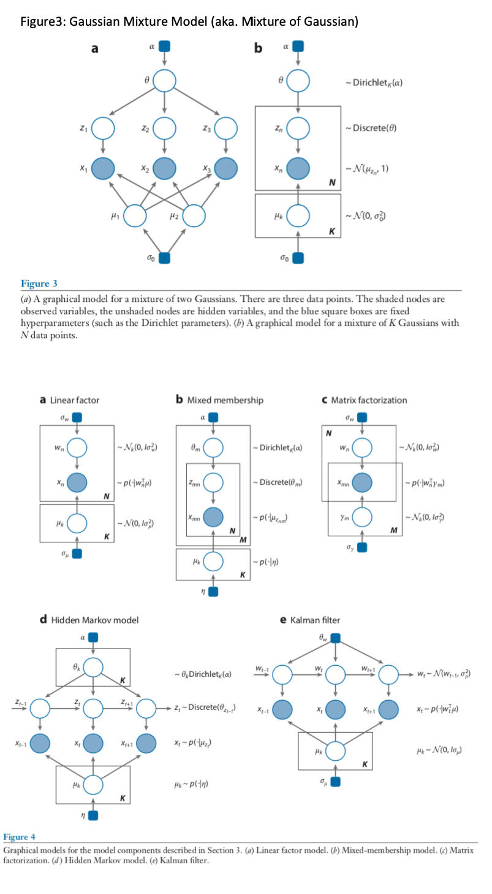

[Paper] Data Analysis with Latent Variable Models
Data Analysis with Latent Variable Models - Blei, 2014¶
Reading Purpose¶
Q: Why am I reading this?
A: To understnad the motivation behind latent variable models
In particular, I want to be clear about the relations among: Probablistic Graphical Model vs. Latent Variable Model vs. Bayesian Inference. They all come up in a very similar setting, but what exactly are they?
Reading Goal¶
Q: What is the product/outcome of this reading?
Be able to articulate the definition of Latent Variable Model
A latent variable model is a probabilistic model that encodes hidden patterns in the data (p.203)
Give an example in Text domain and Image domain where the model is used
Describe the general workflow using the model with Bayesian inference
(1) Build a model
Encode our assumptions about our data and hidden quantities that would have? could have? generated the observations as a joint distribution of hidden random variables and observation(aka. data) random variables.
- Output of this "build" step:
- definition of H (hidden random vars), V (observation random var)
- Description of the model in one of the specification
- Describe the model with its generative process, or
- Descrive the model with its the joint distribution ,P(H,V), or
- Describe the model with its graphical model representation
(2) Compute
Given observation data D, compute the conditional distribution of hidden variables given D (ie. the random variable here can be written as "h|x=D".
- NB: this is not the same random variable as "h".
- This computing process is often referred to as "inference" (I think?), as in "Bayesian inferece". However, this is different from the "inference" used to describe the processing of using a trained model as the test time to "infer", for example, the class of a new test image. Here, we are "inferring" the conditional random varialble
h|x=Data, which is equivalent to say "compute the conditional distribution of the random variable,h|x=D. - NB: This conditional distribution is often referred to as
posterior. The reason it makes sense to call it so is because we are looking at the hidden quantities "posterior" to the data observation process. This is the term from the Bayseian community. But since our model is neither about being bayesian or not (see Dustin's post: "model is just a joint distribution of hidden and observation random variable. To compute the conditional distribution of hidden|observed data, or the predictive distribution P(Xnew|X=data), we can use either frequentist's tools (Eg. EM) or bayesian's tool(eg. hierachical something <- I don't know what this it), I will stick to calling this probability distribution as the "conditional" (as opposed to "posterior") distribution. - so, the outputs of the "compute" step are:
- the conditional distribution, P(H|X=D)
- the predictive distribution, which can be computed from the conditional distribution above
(3) Critique [todo]
Prelim¶
Q1: What is a probabilisitc graphical model?¶
Stanford's CS228:
"Probabilistic graphical models are a powerful framework for representing complex domains usinb probability distributions, with numerous applications in achine learning, computer vision, natural language processing and computational biology. Graphical models bring together graphy theory and probability theory, and provide a flexible framework for modeling large collections of random variables with complex interactions"
Q2: What is a Latent Variable Model?¶
Cross Validated:
"...latent variable models are graphical models where some variables are not seen, but are the causes to the observations. Some of the earliest models were factor analysis. Here the idea is to find a representation of data which reveals some inherent structure of the data..." - link
Q3: What do you mean when you use "bayesisan" to describe a model or an inference method?¶
Dustin Tran's comment on calling a model "bayesian model" (See Bullet 1)
I strongely believe models should simply be gramed as a joint distribution p(x, z) for observation/data variable x and latent variables z
NB: this is in line with Blei's definition on a model, provided in this article (pg. 207)
A model is a joint distribution of x and h, p(h,x | hyperparam) = p(h|hyperparam) * p(x|h), which formally describes how the hidden variables and observations interact in a probability distribution
Dustin continues his comment on calling a model either "bayesian" or "frequentist". He argues this is not the right way to communicate because "there is no difference!"
... They are all just "probabilistic models". The statistical methodology -- whether it be Bayesian, frequentist, fiducial, whatever -- is about how to reason with the model given data. That is, they are about "inference" and not the "model" (Bullet 2)
This comment really clarifies my confusion on when to use the adjective "Bayesian" (ie. to describe a model? or a method of inference?):
- "Bayesian" approach is one way to do your inference (eg. compute the conditional distribution of P(hidden vars | x = observed_data).
- NB: I'm intentionally using the term conditional distribution (rather than posterior distribution of hidden variables because "posterior" is the term most often assosiated with the Bayesian inference. But, as Dustin says, we can do inference (ie. compute -- exactly or approximately -- the conditional distribution of the random variable, (z|x=Data) using either of what we ascribe as a Bayesian tool (eg. hierachical models <-- I don't know what this is) or a frequential tool (eg. EM) .
- NB2: in Bayesian framework, "posterior" means "after observations are gathered and incorporated into our reasoning about the hidden variables, ie. those that remain unobservable"
Sec2: Model¶
The descritpion of specifying how the observations arise from the hidden quantities (aka. the generative process of the data) is where everything starts. The story you are constructing/assuming about this generative process can be expressed in 1) plain english, 2) the joint distribution between the hidden variable and observation variables, and how the joint distribution can be factored, and 3) the probabilistic graphical model. So the first thing is to write this generative process (btw this is "your" choice, "your" story, ie, the assumptions you choose/hypothesize).
- Step 1: Write in plain english what your hidden quantities that are assumed to have given rise to the observations
- Step 2: Write in plain english how they give rise to the observations. That is, what is the dependency like between the hidden quantities and the observations?
- Step 3: Now, translate the english description (that is, the definition of your model and the dependency relations) to mathematical expression using the joint distribution (<- encodes your assumptions about the data generative process) and its facotirazation (<- encodes depedency relations)
- Step 4: Represent the joint distribution (or the generative process) as a graphical model
- Generative process
- indicates a pattern of dependence among the random variable
- Joint distribution
- The traditional way of representing a model is with the factored joint distribution of its hidden and observed variables
- This factorization comes directly from the generative process
- Graphical model
Aside: Why a joint distribution?¶
Q: What can we do with a joint distribution of the hidden and observable variables? A: Joint distribution is like the root of all other distributions. For example, we can derive conditional distribution of hidden variables given observable variables taking specific values (ie. the observations in our data): P(H|X=Data).
NB2: Why the conditional distribution of H|X=Data?¶
NB: aka. the posterior distribution of the hidden variables given observations
We use the posterior to examine the particular hidden structure that is manifest in the observed data. We also use the posterior (over the global variables) to form the posterior predictive distribution of the future data. ... In section 5, we discuss how the predictive distribution is important for checking and criticizing latent variable models
[Blei 2014, pg. 209]
Story so far,¶
- model = joint distribution of hidden and observable variables
Once we have a defined model, and observations (D) , then we can compute the conditional distribution of
H|X=Dwhat does this posterior distribution tell us?: it helps examine the partidular hidden structure that is manifest in the observed data
From the conditional distribution, we can compute the predictive distribution of the future data (given the model and data D). This predictive distribution is important for checking and criticizing latent variable models
Sec3: Example models¶
Q: Why am I reading this? A: What are the outcome/product of reading this section?
- Articulate the 5 example models in three ways of specficying a model.
See Sec.2.1, 2.2, 2.3 for each of the three ways.
- Describe each model by its generative process (sec 2.1)
- Describe each model by its joint distribution (sec 2.2)
- Describe each model by its graphical model (sec 2.3)
Most important figure

[todo]
Gaussian Mixture model¶
Linear Factor model¶
- More general category is called "Factor models"
- Factor models are important as they are components in more complicated models (eg. the Kalman filter)
- Examples of statistical models that fall into this category: principal component analysis, factor analysis, canonical correlation anlysis
- Relation to Gaussian Mixture model: in Gussian mixture model, our z_n's are discrete random vars. Factor model's use 'continuous` hidden variable z.
- Generative process
- Joint Distribution
- Represent the model as a graphical model